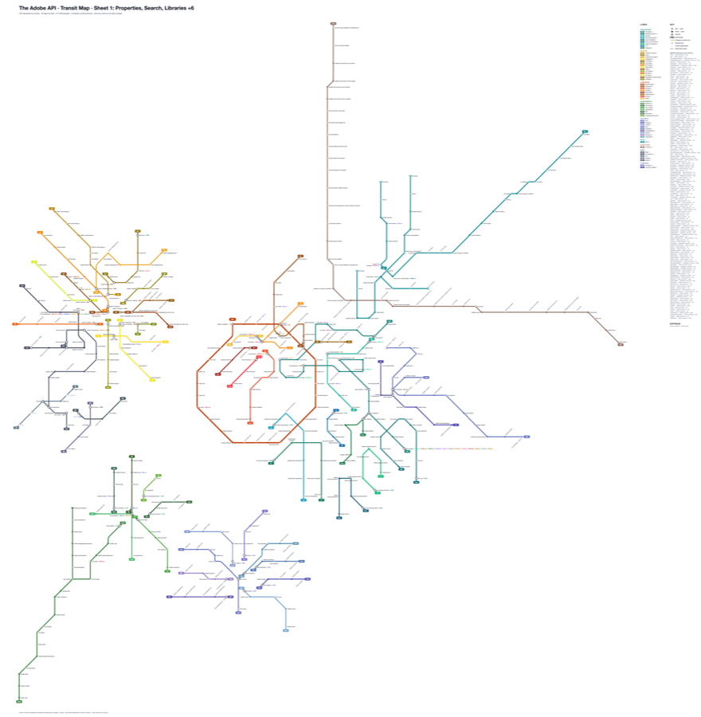
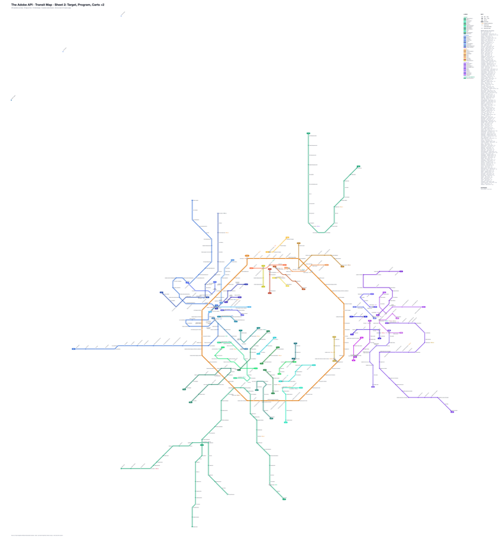
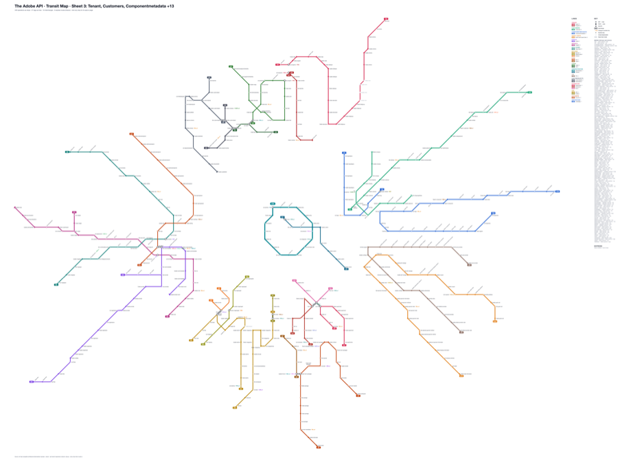
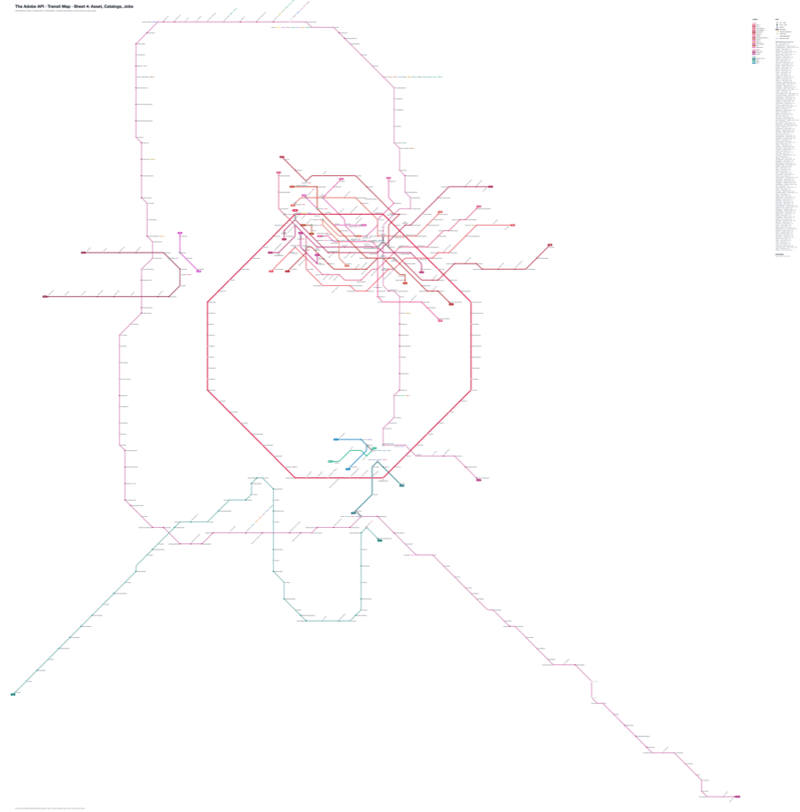
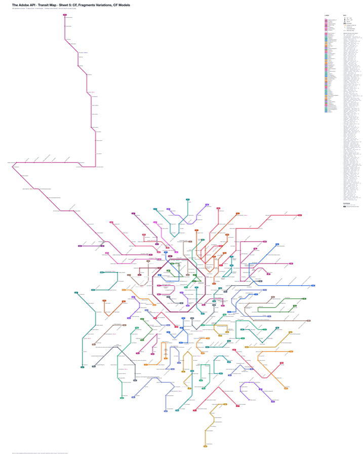
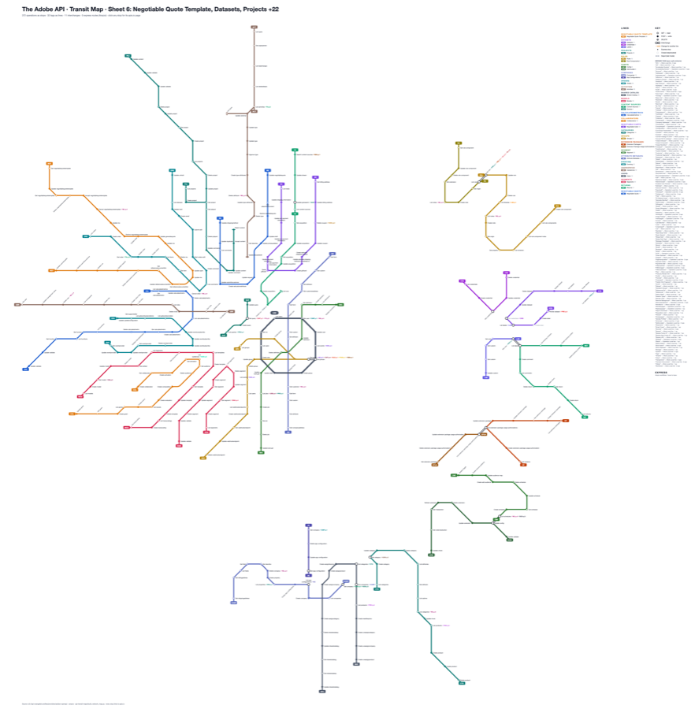

p.1 Properties, Search, Libraries +6
450 operations · 56 lines
- Properties
- Search
- Libraries
- Agreements
- Criteria
- Bulk
- Inventory
- Data
- Company
Interchanges to p.2 (8), p.3 (14), p.4 (14), p.5 (2), p.6 (15)
2606 operations on 6 sheets · products that interchange most share a sheet · on each sheet, "⇄CODE p.N" means change for that line on page N · every stop links to apis.io

450 operations · 56 lines
Interchanges to p.2 (8), p.3 (14), p.4 (14), p.5 (2), p.6 (15)

449 operations · 46 lines

449 operations · 27 lines

448 operations · 22 lines
Interchanges to p.1 (14), p.2 (13), p.3 (20), p.5 (17), p.6 (16)

438 operations · 72 lines

372 operations · 32 lines
Interchanges to p.1 (15), p.2 (7), p.3 (8), p.4 (16), p.5 (2)